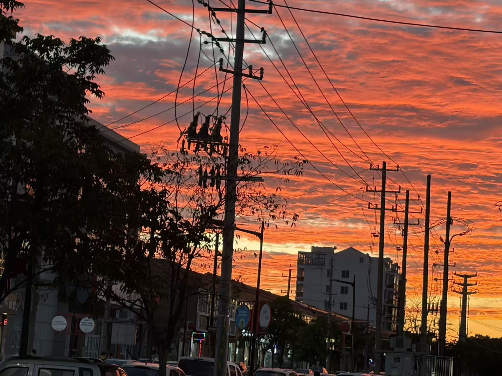
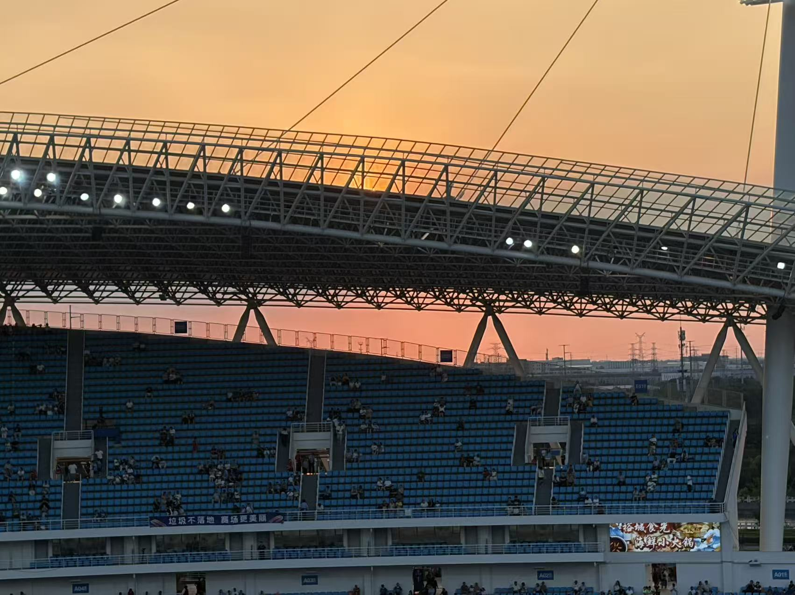

温润踏实。认真做好每一件事，不张扬，也不轻易放弃。
ABOUT ME / GREEN STUDIO
计2601 · 周钰山
藏山之玉，
亦愿他山攻玉。
温润踏实，乐于合作；认真做事，也认真让大家开心。
热爱运动、音乐与风景，也期待在技术世界里不断探索。

01 / 名字里的三座山
我总觉得，名字不只是一个称呼，也可以是一种对自己的期许。 性格正如我的名字：藏山之玉，是温润踏实； 他山攻玉，是合作助人；有矿之山，则是幽默破冰。 三种不同的意味，也构成了我希望成为的自己。
合作助人。愿意分享、彼此学习，在交流中共同进步。
幽默破冰。希望自己能认真做事，也能给团队带来笑声。
我相信，一个优秀的团队不只是每个人都很强， 更是大家愿意互相帮助、彼此托举。 如果有机会加入绿荫，我希望自己能帮助他人、团结伙伴， 也能在大家疲惫的时候，成为那个逗笑大家的人。
02 / 不止一种热爱
运动让我学会坚持，也让我理解团队配合的意义； 音乐让我感受节奏与默契；摄影则让我愿意停下脚步， 认真观察生活中容易被忽略的美好。
曾获得足球市长杯冠军，并在省长杯中闯入八强。
曾闯入校级四强，也热爱游泳、健身与跑步。
擅长单簧管，多次参与校级乐团助演，助力演唱比赛获得一等奖。
喜欢用镜头记录山川、草木与光影，也享受发现日常之美的过程。

03 / 关于绿荫与成长
“玉在山而草木润，润生珠而崖不枯。”
我想，绿荫正是一座值得扎根的山。 每个人都能在这里打磨自己，也把收获带给身边的人； 当技术与热爱汇聚，成长便不再只是一个人的事。
我期待和绿荫里的学长学姐们一起打磨技术、提升实力， 在项目与合作中不断突破，寻找能够相互启发、 共同进步的技术挚友。 现在的我还在学习路上，但我愿意保持好奇、踏实行动， 把每一次尝试都变成下一次进步的起点。